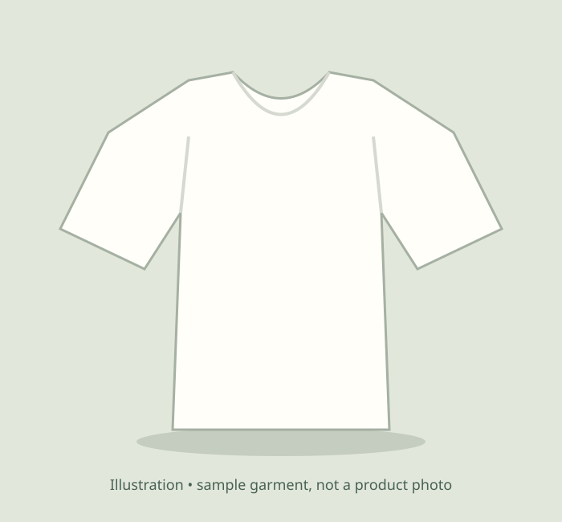

Fictional student project • no actual sales, bookings, messages or professional accounts.
Day One Cotton / one useful basic
Choose fit first.
Keep it simple.
For the commuter who wants one simple everyday option. Compare the measurements, pick a size, and see the total before checkout.
$24 per shirt · White · Regular fit · Sample cotton specification
See sizes and checkoutAll product details and prices are illustrative. No durability or sustainability claims have been tested.

Measure a tee you already like
Lay it flat. Width is armpit to armpit; length is shoulder to hem. These are garment measurements in cm, not body measurements.
| Size | Width | Length |
|---|---|---|
| S | 48 cm | 67 cm |
| M | 51 cm | 70 cm |
| L | 54 cm | 73 cm |
Care, shipping & returns in this demo
Sample care: cold wash, low heat. No shipment, payment or return takes place. The sample total includes $0 simulated delivery and $0 simulated tax; a real store would calculate applicable charges and publish actual policies.
Orders on this demo
Shared local SQLite history when run locally; this browser’s history on GitHub Pages. Synthetic data only.